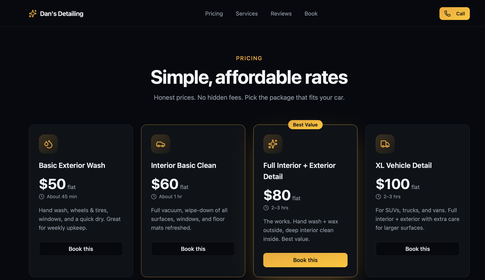
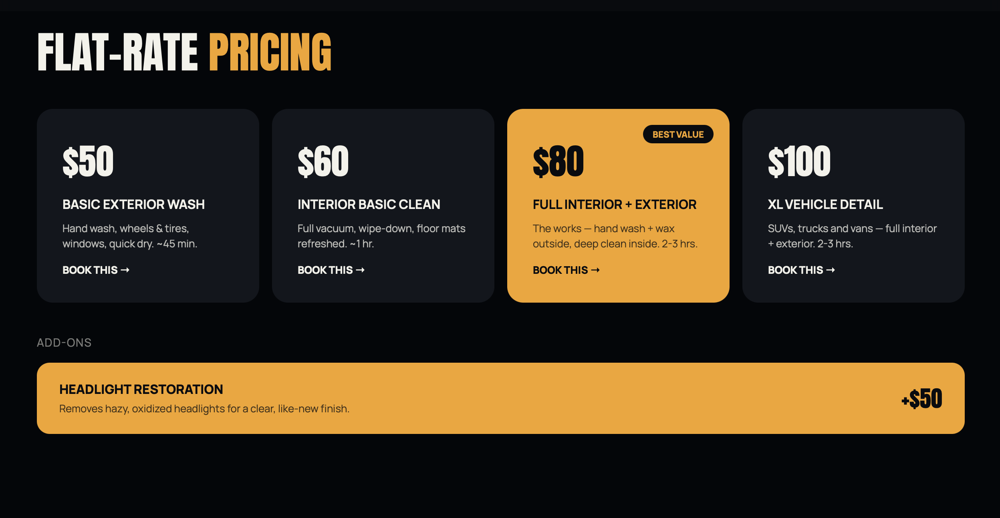

Website Health Report
Greenline Landscaping
Millbrook, NY · Prepared August 6, 2026
C
54/100
What We Found
-
Has a WebsiteYes, but it hasn't been touched in years and looks outdated to visitors.
-
Mobile-FriendlyThe site is hard to use on a phone, and that's how most customers will find you.
-
Page SpeedThe site takes too long to load, so people leave before it even finishes.
-
Google ReviewsSolid reviews, but they're not shown anywhere on the site itself.
-
SSL / SecurityBrowsers show a "Not Secure" warning on the site, which scares visitors off.
-
Social Media PresenceThere's a page out there, but the website never links to it.
What This Is Costing You
Most people search for a landscaper on their phone. If the site is slow or awkward there, they call the next name on the list.
A "Not Secure" warning sends people straight to a competitor's site, with no message and no phone call.
The reviews are good, but if people can't see them on the site, they don't know to trust the business yet.
Here's What It Could Look Like

before —current site screenshot

after —mockup preview
Example from a recent JT Builds Co redesign